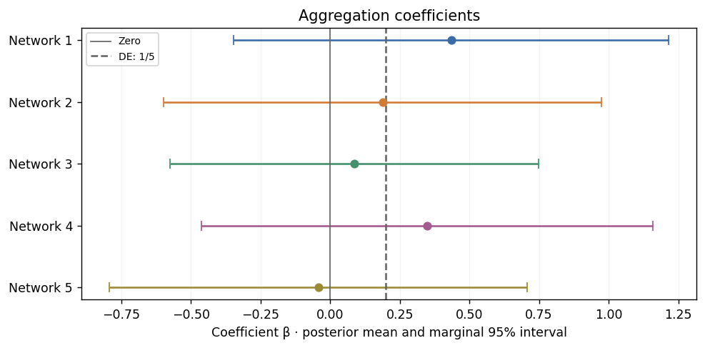
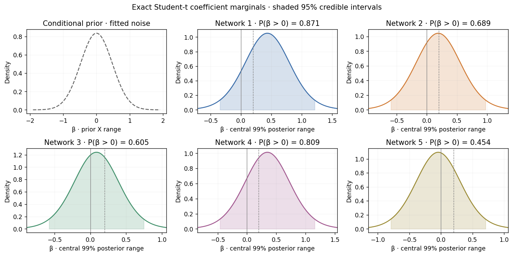
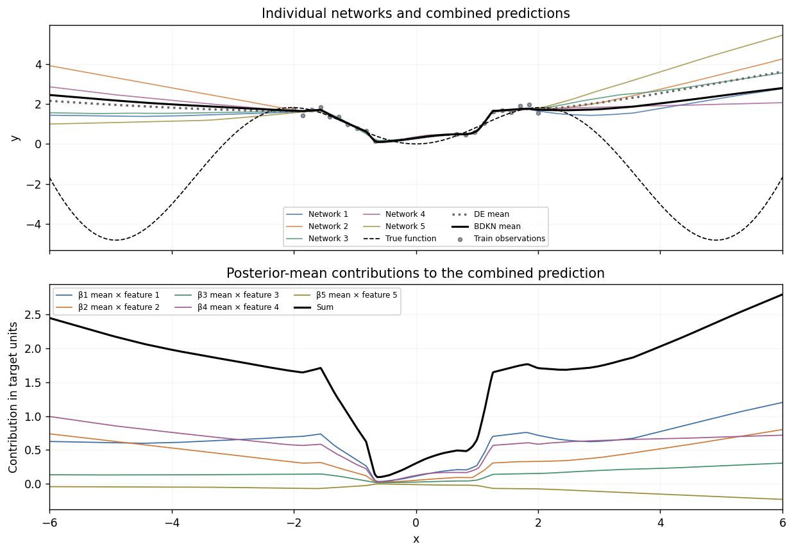
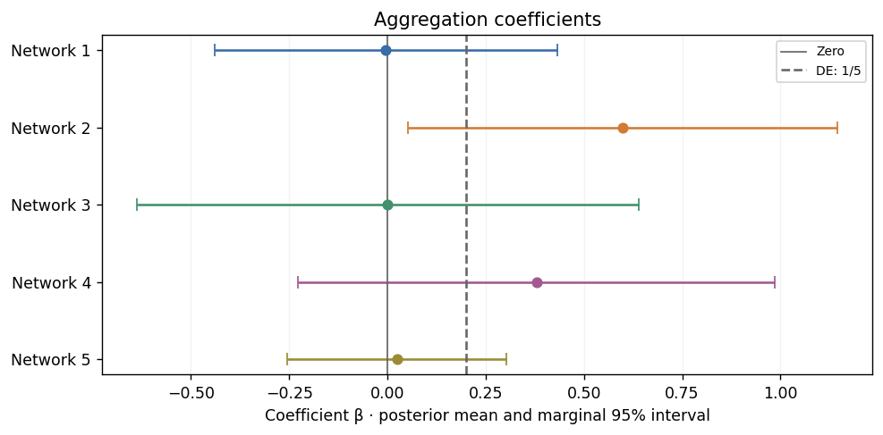
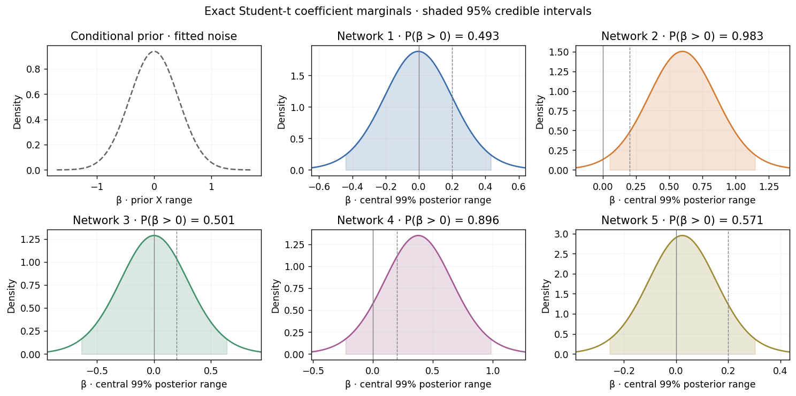
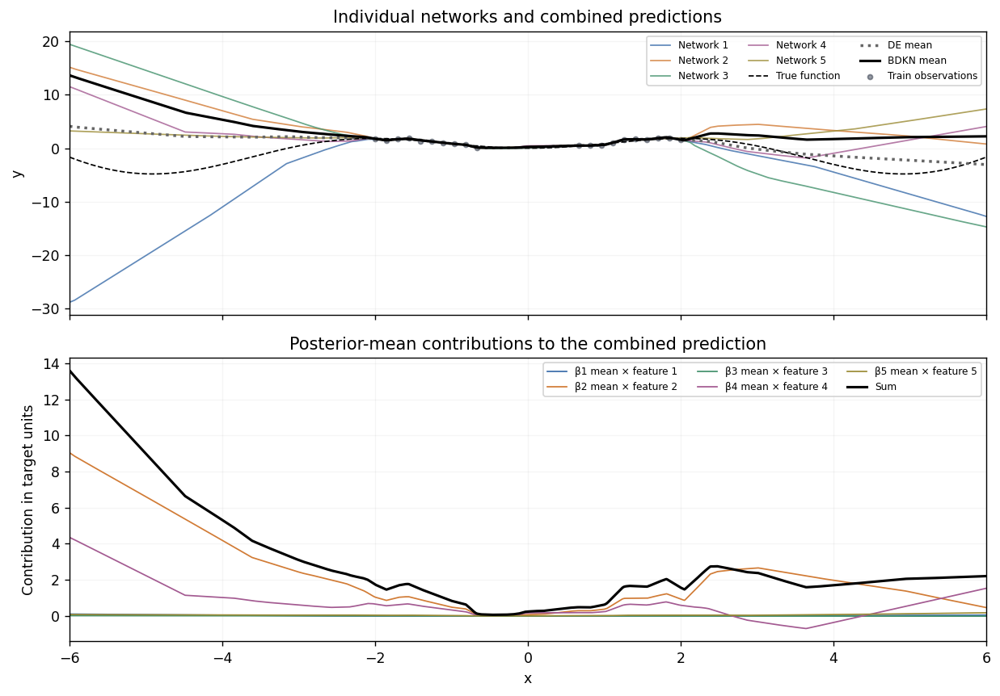
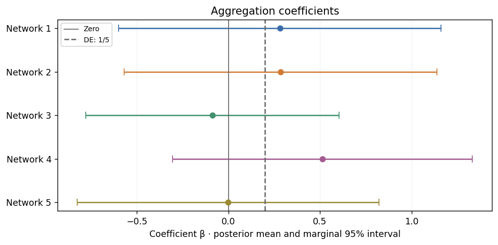
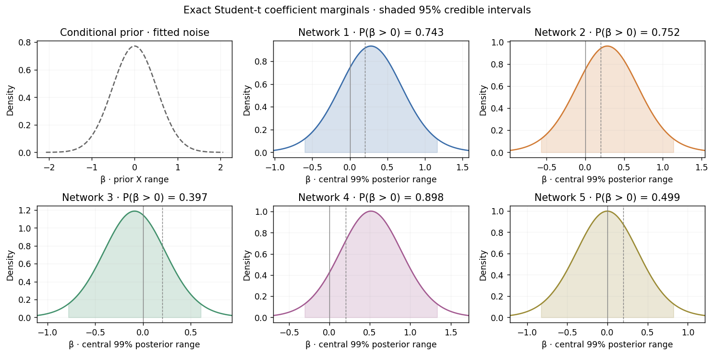
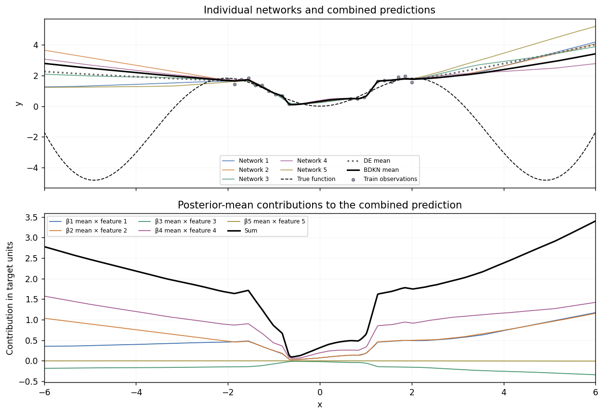

Regression comparison
Download resultsAggregation weights
Coefficients can be negative and need not sum to one. Intervals describe coefficient uncertainty; the dashed reference is DE’s fixed 1/H weight.
BDKN


Each density panel uses its own X range for readability; coefficient intervals above share a common axis. Prior reference conditions on fitted noise. Contribution shares use held-out inputs; test targets are used only for scoring.
| Network | β mean | 95% low | 95% high | P(β > 0) | Contribution share | Test RMSE | Test NLL |
|---|---|---|---|---|---|---|---|
| 1 | 0.40229 | -0.37084 | 1.17542 | 0.85467 | 0.35791 | 3.67243 | 518.48181 |
| 2 | 0.20446 | -0.59245 | 1.00137 | 0.70079 | 0.22500 | 4.14006 | 525.64604 |
| 3 | 0.00120 | -0.58351 | 0.58591 | 0.50169 | 0.00156 | 4.57182 | 116.63683 |
| 4 | 0.38991 | -0.39517 | 1.17498 | 0.84372 | 0.40443 | 3.92271 | 432.30151 |
| 5 | 0.00942 | -0.80302 | 0.82186 | 0.50953 | 0.01111 | 4.38657 | 253.42808 |
Functional repulsion · BDKN



Each density panel uses its own X range for readability; coefficient intervals above share a common axis. Prior reference conditions on fitted noise. Contribution shares use held-out inputs; test targets are used only for scoring.
| Network | β mean | 95% low | 95% high | P(β > 0) | Contribution share | Test RMSE | Test NLL |
|---|---|---|---|---|---|---|---|
| 1 | 0.43503 | -0.34596 | 1.21602 | 0.87053 | 0.33615 | 3.63393 | 200.85085 |
| 2 | 0.18851 | -0.59806 | 0.97508 | 0.68871 | 0.22236 | 4.59379 | 89882.60157 |
| 3 | 0.08585 | -0.57653 | 0.74823 | 0.60517 | 0.08133 | 4.00954 | 102.90676 |
| 4 | 0.34774 | -0.46258 | 1.15806 | 0.80933 | 0.31535 | 3.88432 | 2644.31145 |
| 5 | -0.04232 | -0.79234 | 0.70770 | 0.45374 | 0.04480 | 4.44186 | 147.23011 |
Weight repulsion · BDKN



Each density panel uses its own X range for readability; coefficient intervals above share a common axis. Prior reference conditions on fitted noise. Contribution shares use held-out inputs; test targets are used only for scoring.
| Network | β mean | 95% low | 95% high | P(β > 0) | Contribution share | Test RMSE | Test NLL |
|---|---|---|---|---|---|---|---|
| 1 | -0.00365 | -0.44010 | 0.43280 | 0.49312 | 0.00684 | 7.17023 | 12791204.48935 |
| 2 | 0.59861 | 0.05167 | 1.14555 | 0.98325 | 0.72343 | 7.02200 | 12093055.44095 |
| 3 | 0.00089 | -0.63672 | 0.63850 | 0.50115 | 0.00180 | 8.60198 | 14488108.73112 |
| 4 | 0.37921 | -0.22824 | 0.98667 | 0.89618 | 0.24963 | 4.85553 | 5830536.13503 |
| 5 | 0.02415 | -0.25426 | 0.30257 | 0.57089 | 0.01831 | 4.93571 | 1664318.51002 |
First-order repulsion · BDKN



Each density panel uses its own X range for readability; coefficient intervals above share a common axis. Prior reference conditions on fitted noise. Contribution shares use held-out inputs; test targets are used only for scoring.
| Network | β mean | 95% low | 95% high | P(β > 0) | Contribution share | Test RMSE | Test NLL |
|---|---|---|---|---|---|---|---|
| 1 | 0.28115 | -0.59974 | 1.16204 | 0.74342 | 0.21896 | 4.03198 | 343.25124 |
| 2 | 0.28464 | -0.57007 | 1.13934 | 0.75237 | 0.26959 | 4.47752 | 85598.25161 |
| 3 | -0.08787 | -0.77999 | 0.60425 | 0.39692 | 0.07638 | 4.22285 | 141.91179 |
| 4 | 0.51426 | -0.30411 | 1.33263 | 0.89761 | 0.43390 | 4.09970 | 645.56205 |
| 5 | -0.00133 | -0.82450 | 0.82184 | 0.49867 | 0.00117 | 4.39328 | 223.24746 |